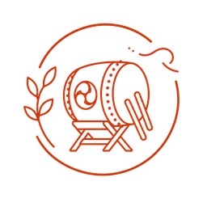
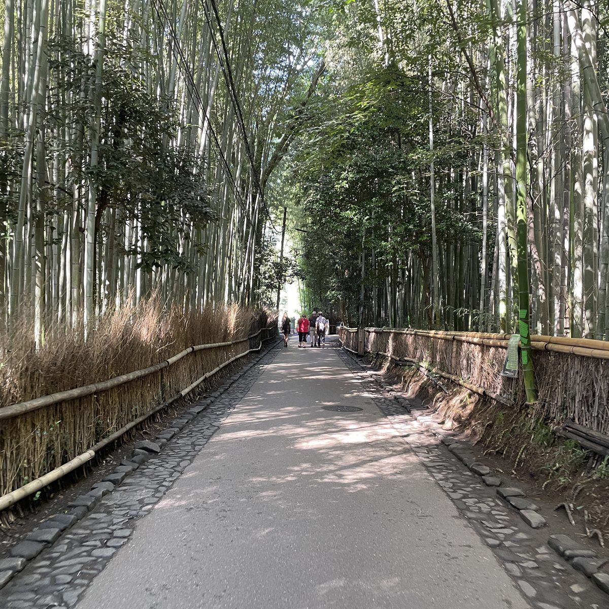
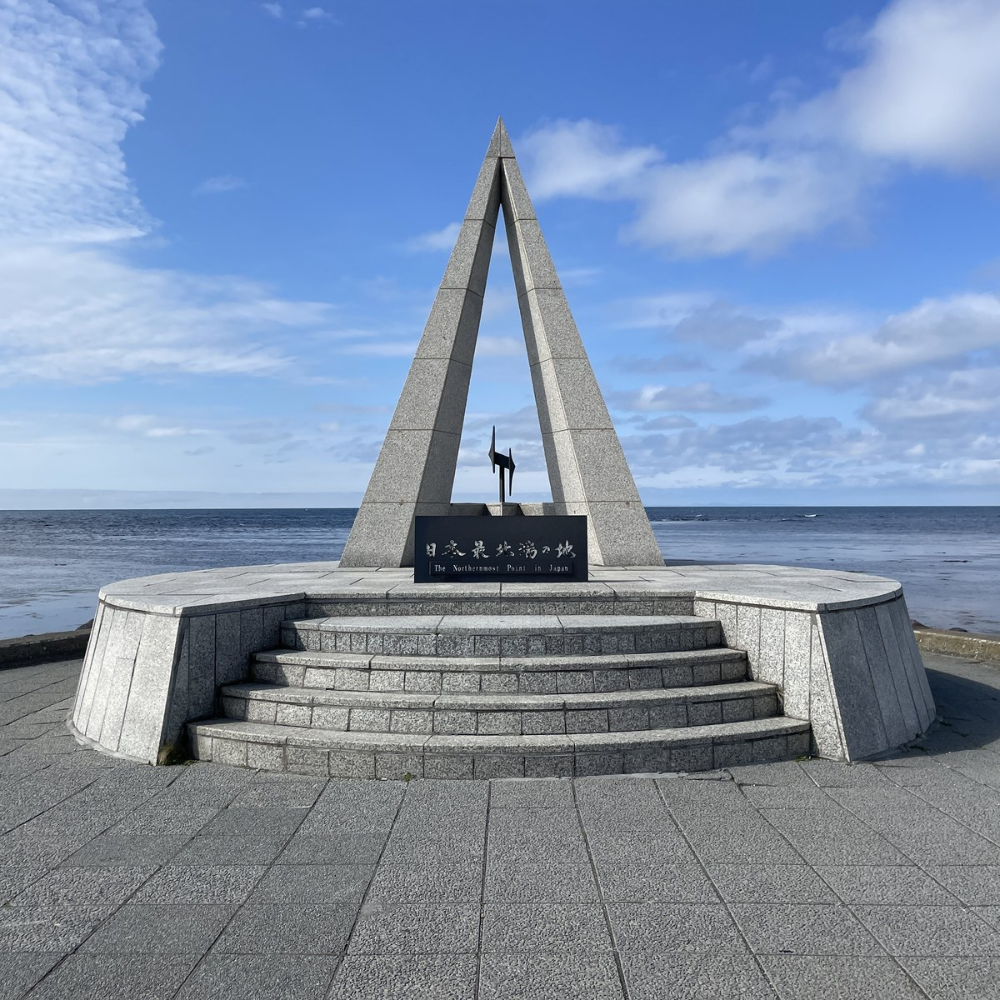

About
旅する記憶と、紡ぐ記録。
しゆ（shiyu）です。旅が好きで、車窓を流れる景色や、降り立った町の空気を映像に残しています。 同じ景色を旅した人にも、これから旅する人にも。 楽しかった記憶を確かな記録として、ここに少しずつ積み上げていきます。
旅行|交通
車窓や様々な企画、旅行の様子を映像で。

太鼓の達人
積み上げた記録を辿り、新たに積み上げた記録のすべてを残す。
旅の記録
乗りつぶし・市区町村踏破・ドーミーイン行脚の記録をここに。


Latest Videos
最新動画
2チャンネルの新着をまとめて。ぜひご覧ください。


Channels & SNS
フォローする
News
お知らせ
- 2026.07.12 新着動画
- 太鼓の達人チャンネル に新しい動画「384.トイマチック☆パレード!【太鼓の達人】」を公開しました。
- 2026.07.10 新着動画
- Re:しゆ に新しい動画「16.新幹線乗り放題だったので始発から終電まで乗りました（WESTERポイント全線フリーきっぷ）」を公開しました。
- 2026.07.10 新着動画
- 太鼓の達人チャンネル に新しい動画「383.ダン・ダンドゥビ・ズバー!【太鼓の達人】」を公開しました。
- 2026.06.01 サイト
- -志遊- を公開しました。ブログ・旅の記録は順次追加予定です。